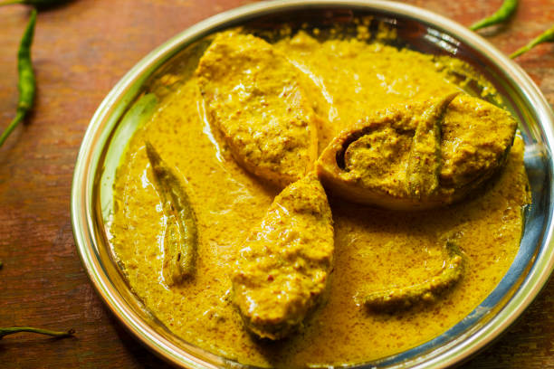

Back to States
Bengali Fish Curry

Ingredients
- 500g Rohu fish, cut into pieces
- 2 potatoes, cubed
- 2 tomatoes, chopped
- 2 onions, finely chopped
- 2 tbsp ginger-garlic paste
- 2 green chilies
- 1 tsp turmeric powder
- 1 tsp red chili powder
- 1 tsp cumin powder
- 1 tsp coriander powder
- 2 tbsp mustard oil
- Salt to taste
- Coriander leaves for garnish
Instructions
1. Marinate fish pieces with turmeric and salt for 15 minutes.
2. Heat mustard oil and lightly fry the fish pieces, set aside.
3. In the same oil, fry potatoes until golden.
4. Add onions and cook until translucent.
5. Add ginger-garlic paste and all spices, cook until oil separates.
6. Add tomatoes and cook until soft.
7. Add water, potatoes, and bring to a boil.
8. Add fried fish pieces and simmer until gravy thickens.
9. Garnish with coriander leaves and serve hot with rice.